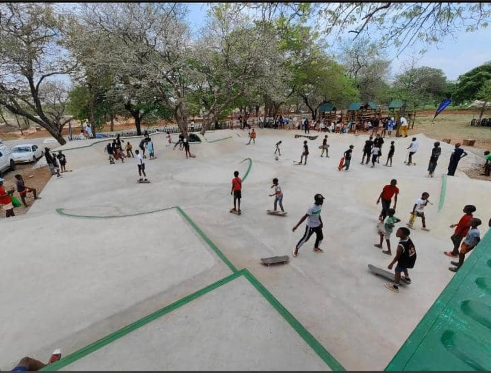

Gerald Mango
About Me

Hello! My name is Gerald Mango, and I’m learning dynamic web development principles in WDD 131. I try to enjoy coding, design, and creating web experiences that are somewhat functional at the very least.
My Interests
In my free time, I love researching about my course and find ways to improve my skills and gain some more knowledge, also enjoy skateboarding as a way to clear my mind.